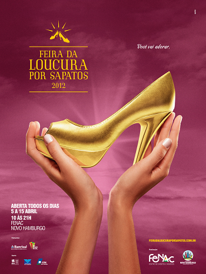

Capítulo 1: As artes visuais e a contribuição da indústria metalúrgica
Questão-problema:
A arte está na indústria? Ou a indústria fornece matéria prima para a Arte?
Contextualizando:
“...essas pequenas felicidades certas...
é preciso aprender a olhar,
para poder vê-las assim.”
Cecília Meireles
A leitura de uma figura (imagem) pode ser considerada uma aventura em que o conhecimento e sensibilidade se mesclam na busca de significados. Múltiplos olhares são lançados sobre um mesmo objeto. São inúmeros os cruzamentos entre arte e indústria. Muitos escultores, por exemplo, trabalham com aço, cobre, ferro, realizando, muitas vezes, um criativo aproveitamento de sucata. As primeiras indústrias de ferro e aço começaram a operar no Rio Grande do Sul no final do Século XIX. É antiga a atração de artesãos e inventores por artefatos metálicos. Muitos artistas interessaram-se em realizar suas obras utilizando o ferro, o aço, o cobre e outros metais. No Rio Grande do Sul, destacaram-se artistas que alcançaram renome internacional. Vasco Prado e Francisco (Xico) Stockinger são os mais significativos, mas existem muitos outros excelentes escultores que nasceram ou têm suas obras expostas em nosso Estado.
“Guerreiro a cavalo” - Francisco Stockinger – Escultura em ferro, madeira e bronze, década de 1960.


Assista ao filme produzido por Frederico Mendina sobre o artista Francisco Stockinger (é importante destacar que o artista ficou surdo em sua velhice). No filme, o diretor fez questão de deixar os últimos minutos sem som, para que o espectador pudesse, por alguns instantes, vivenciar a sensação do artista.
Reconstruindo conhecimentos:
Podemos dizer que Arte, através de suas diversas manifestações e linguagens, nos despertam um sentimento de admiração. Nossa cultura possui uma noção que classifica algumas atividades concedendo-lhes alguns privilégios. Podemos, talvez, afirmar que, se não conseguimos definir exatamente o que é Arte, pelo menos sabemos quais coisas ou atividades correspondem a essa ideia e qual deve ser nosso comportamento frente a elas. Relembrando que, a leitura atenta de uma obra é uma aventura em que conhecimento e sensibilidade se mesclam na busca de significados, lançando múltiplos olhares sobre o mesmo objeto. É possível, através da apreciação de uma gravura, de um desenho, de uma pintura – mesmo através de uma reprodução impressa – identificar diferenças de estilo ou de técnica.

Atualmente, o estudo da Arte na escola engloba quatro linguagens artísticas distintas. São elas: Artes Visuais, Música, Teatro e Dança. As artes plásticas, que se utilizam de técnicas de produção e de materiais diversos com os quais o ser humano, no caso, o artista, reflete a sua visão da realidade, constroem formas e imagens com o objetivo de revelar uma nova concepção estética. Hoje em dia, para que uma obra seja considerada artes plásticas, ela precisa ser visível e palpável, isto é, tangível. Há uma tendência cada vez maior em utilizar, ao mesmo tempo, diferentes métodos para a criação de uma obra. Para compreender melhor esse conceito de que, acompanhando a história de evolução da humanidade, tanto social quanto industrial e de ofertas de materiais, abaixo você pode acompanhar um quadro síntese da evolução artística, restrito à linguagem escultórica.
Síntese da evolução do conceito de espaço escultórico


As técnicas e modos de fazer esculturas, seguiram se apropriando de novos materiais e processos industriais, chegando a ser comum nos dias de hoje que os artistas produzam objetos e obras de arte a partir de resinas sintéticas, madeiras e metais. O artista plástico Saint Clair Cemim, que nasceu em Cruz Alta e mora desde 1978 nos Estados Unidos, “conta como aprendeu a ver os objetos e fala de seus desenhos e esculturas que fazem alusão ao inconsciente”, conforme você poderá acompanhar no vídeo a seguir. No início, o artista falará sobre o trabalho com obras de arte e o que elas proporcionam. Conforme ele vai mostrando as suas obras, vão sendo expressas suas inspirações e seus conceitos sobre determinado objeto artístico. Ele revela que uma obra tem de ser olhada, questionada, compreendida, ou não, mas que não cabe ao artista ficar explicando-a. Convidamos, então, você a acompanhar a exposição de Cemim, olhando para objetos conhecidos do seu cotidiano de um jeito diferente, tentando atribuir a esses novos objetos, novos conceitos.


Praticando - Reflexão e ação
Observe as esculturas da artista Sônia Ebling. Com que material você acha que elas foram produzidas? Que sensação elas passam a você?

Resolução: As duas obras da artista Sonia Ebling apresentadas na atividade foram produzidas em bronze.

Agora observe as esculturas de Vasco Prado. Em qual delas você percebe movimento? O menino das duas esculturas passa a mesma sensação?

Resolução: A obra que apresenta a sensação de movimento é a obra “ Negrinho do Pastoreio”.
A seguir seguem algumas questões baseadas em provas do ENEM para que você, além de um novo jeito de olhar para o mundo, reconheça
como os exames exigem do candidato conhecimentos sobre a Arte. As questões aparecem com as respostas, pois o objetivo é que você reflita sobre o assunto.
1) Com contornos assimétricos, riqueza de detalhes nas vestes e feições, a escultura barroca no Brasil tem forte influência do rococó europeu e está representada
aqui por um dos profetas do pátio do Santuário do Bom Jesus de Matosinho, em Congonhas (MG), esculpido em pedra sabão por Aleijadinho. Profundamente religiosa sua obra revela:

(Fonte: https://g1.globo.com/mg/minas-gerais/o-que-fazer-em-belo-horizonte/noticia/2018/08/21/ouro-preto-e-congonhas-se-unem-para-celebrar-legado-de-aleijadinho.ghtml)
a) ( ) liberdade, representando a vida de mineiros a procura da salvação.
b) ( ) credibilidade, atendendo a encomendas dos nobres de Minas Gerais.
c) ( ) simplicidade, demonstrando compromisso com a contemplação do divino.
d) ( ) personalidade, modelando uma imagem sacra com feições populares.
e) ( ) singularidade, esculpindo personalidades do reinado nas obras divinas.
Resolução: Alternativa D
As esculturas barrocas no Brasil têm forte influência do rococó europeu. As obras sacras de Aleijadinho distinguem-se das demais por apresentar
características das esculturas inspiradas nas pessoas do povo.
2)

(Fonte: https://blog.humanarte.net/2019/11/arte-enem-2019.html)
As duas imagens são produções que tem a cerâmica como matéria prima. A obra Estrutura Vertical Dupla se distingue da Urna Cerimonial Marajoara ao:
a) ( ) evidenciar a simetria na composição das peças.
b) ( ) materializar a técnica sem função utilitária.
c) ( ) abandonar a regularidade na composição.
d) ( ) anular possibilidades de leituras afetivas.
e) ( ) integrar o suporte na sua constituição
A Urna Cerimonial Marajoara possui a função de conter os restos mortais de um ser humano, tendo, portanto, um objetivo prático na sociedade em que foi produzida.
Resolução: Alternativa B
3) Veja a imagem de uma das esculturas pré-históricas mais famosas, a Vênus de Willendorf.

(Fonte: https://www.infoescola.com/arqueologia/venus-de-willendorf/)
Sobre essa escultura, é correto afirmar que
a) ( ) foi encontrada no sítio arqueológico da Serra da Capivara, no Piauí.
b) ( ) foi descoberta em 1990, por um arqueólogo chamado Willendorf.
c) ( ) está relacionada a cultos pré-históricos de fertilidade.
d) ( ) serviu diretamente como modelo para a Vênus de Milo, na Grécia.
e) ( ) foi encontrada ao lado de uma múmia, no Antigo Egito.
A Vênus de Willendorf é uma pequena estatueta de 11 centímetros de comprimento. Foi encontrada em 1908, na região austríaca de Willendorf,
pelo arqueólogo Josef Szombarthy. As características dessa escultura, que exageram as formas femininas, dão prova de que ela tinha utilidade em rituais de fertilidade.
Outros acreditam que ela poderia também ter sido usada como amuleto.
Resolução: Alternativa C
Para entender mais
Caso você queira conhecer as características de mais alguns movimentos na história da Arte, seguem os seguintes vídeos.
Surrealismo:Impessionismo:
O que aprendi:
Neste capítulo, aprendemos sobre o espaço escultórico e alguns períodos estéticos que, acompanhando a evolução da sociedade, modificaram as formas de fazer Arte.
Compreendemos também a relação quanto à produção de arte a partir de matérias primas oferecidas pela indústria.